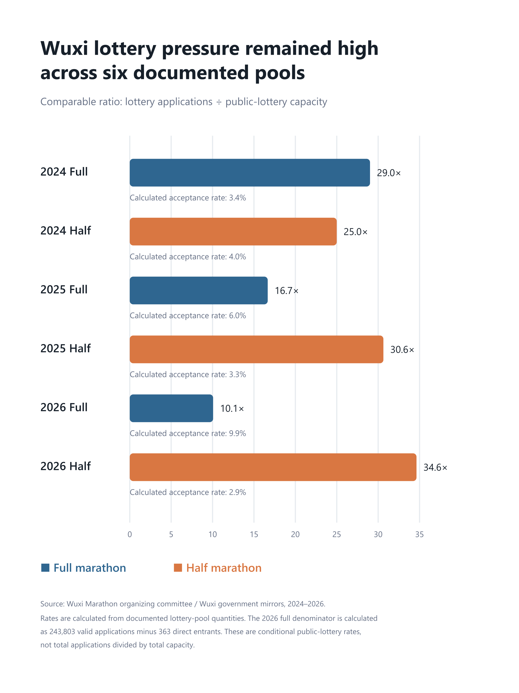
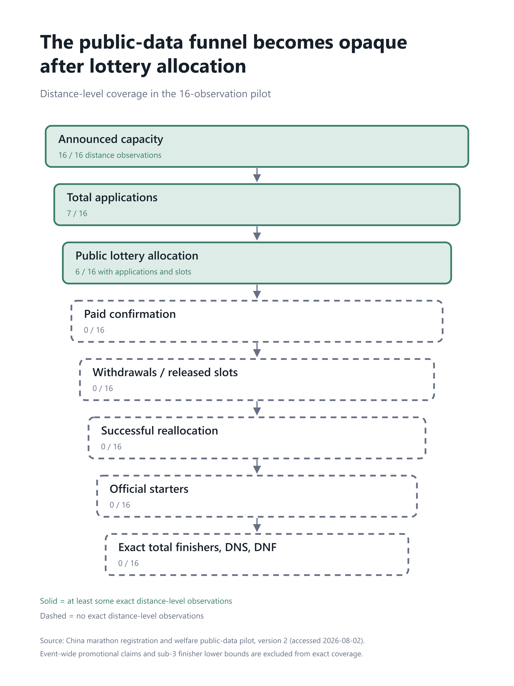
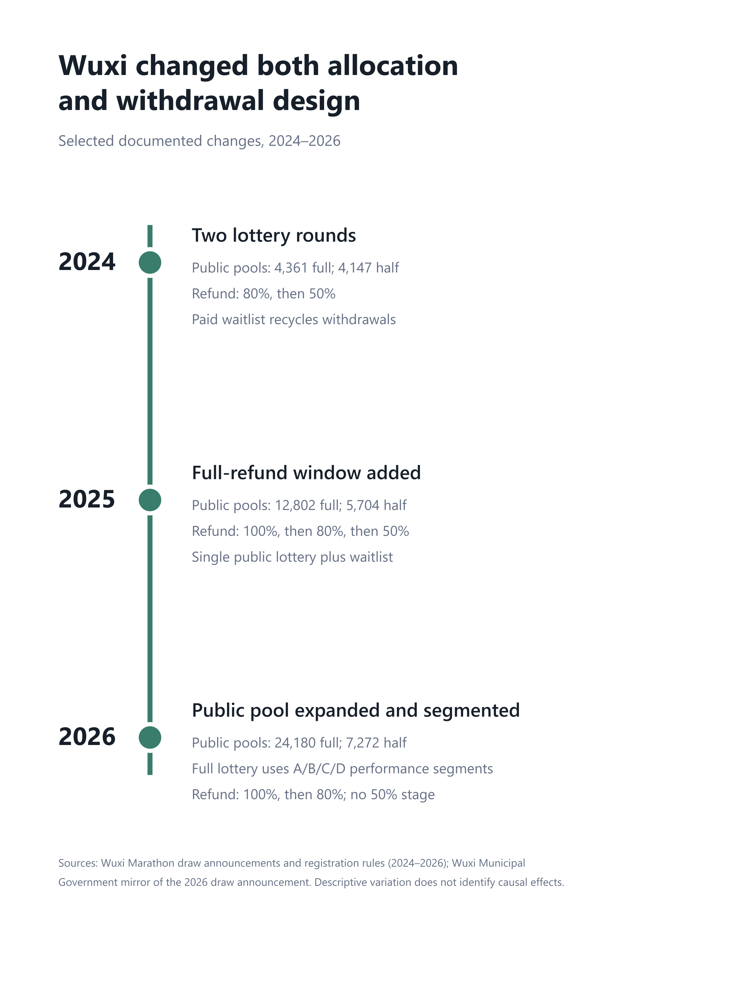

Apply First, Decide Later? The Welfare Economics of Marathon Lotteries in China
1. One runner, three applications
Imagine a runner who wants to complete one autumn marathon. Race A is her favorite, but its lottery odds are poor. Races B and C are acceptable backups and fall near the same date. When applications close, she does not know whether an injury will heal, whether work will require travel, what airfares will cost, or whether her training partners will attend. She applies to all three.
The runner wins A and B. By race week, she prefers A and does not attend B. Another runner, who ranked B first, received no entry.
Did the first runner behave irresponsibly? Not necessarily. Applying broadly insured her against uncertain lotteries and uncertain future circumstances. If applications are inexpensive and outcomes are independent, the portfolio can be individually rational. The aggregate result, however, depends on the mechanism. If B promptly gives the released slot to a willing waitlisted runner, flexibility may be preserved at little social cost. If the slot expires, prepared capacity goes unused. Even if B fills every place, an independently randomized allocation may still put a slot in lower-value hands than a coordinated assignment would.
That example separates four ideas that are too often collapsed. Individual rationality asks whether the runner’s portfolio maximizes her expected payoff. Aggregate coordination describes the institutional process linking applications, lotteries, payments, withdrawals, and waitlists. The two welfare outcomes are unused capacity and allocative mismatch. Multiple applications and decentralized lotteries are mechanisms that can generate or mitigate those outcomes; they are not a third loss to count again.
The balanced hypothesis of this essay is therefore conditional. “Apply first, decide later” is valuable when it insures runners against uncertainty and when released slots are recycled efficiently. It becomes costly when runners can hold conflicting entries, withdrawals arrive too late, and reallocation fails. Oversubscription alone proves neither case.
2. There is no single Chinese marathon registration system
The pilot data show a menu of mechanisms, not one national template. Some races collect money at application; others charge only lottery winners. Some confirmed entries are nonrefundable. Others offer declining refunds designed to elicit early withdrawal. Some rules describe formal waitlists or a second lottery; others do not say whether forfeited places return to the public pool. Direct, performance, loyalty, charity, invited, sponsor, and public-lottery channels may coexist.
The distinctions matter because “capacity” is not synonymous with “lottery slots.” For a race-distance :
- Total event capacity is the announced field size for that distance.
- Public-lottery capacity is the subset made available through the documented public draw.
- Guaranteed or direct-entry capacity covers specified channels that bypass the public draw.
- Charity capacity may be separate or nested inside another reported component.
- Valid lottery applications are the applications admitted to the relevant draw, not necessarily every application submitted.
- Lottery winners are places awarded in the defined lottery round, not necessarily paid confirmations or starters.
The Wuxi records illustrate why components cannot be added casually. In 2024, the documented full-marathon allocation reconciles as 16,467 deduplicated direct entries, 1,172 special first-round lottery winners, and 4,361 second-round public-lottery places, totaling the announced 22,000. The 300 charity entries are nested in the direct-entry count and must not be added again. For the half marathon, 2,253 direct entries, 1,600 special first-round winners, and 4,147 public places reconcile to 8,000; 200 charity entries are again nested.[1]
By 2025, Wuxi’s full-marathon capacity of 25,000 was decomposed into 8,212 deduplicated direct entries, 1,000 charity entries, 2,986 invited entries, and 12,802 public-lottery places. The half-marathon components—460 direct, 500 charity, 1,336 invited, and 5,704 public places—sum to 8,000.[2] In 2026, the documented full-marathon pool shifted sharply toward the public draw: 363 performance-direct places, 2,457 invited places, and 24,180 lottery places sum to 27,000; the half marathon had 728 invited and 7,272 public-lottery places, summing to 8,000.[3]
Payment and withdrawal rules vary too. Wuxi charged after the lottery and used a paid waitlist. Its 2024 rules offered an 80 percent refund through February 23 and 50 percent through March 3; withdrawals were to be filled from the waitlist.[1] In 2025 it added a full-refund window through January 26, followed by 80 and 50 percent stages.[4] In 2026 it retained 100 and 80 percent stages but removed the 50 percent stage.[5]
Other races in the pilot use different filters. Hangzhou’s 2023 rules placed payment and medical-document submission in the same post-lottery window; in 2024, winners first uploaded proof and then paid within two days after approval.[6][7] Taizhou’s 2023 rules collected payment at application and said that fees would not be refunded after qualification was obtained.[8] Miyun in 2025 also charged at application: unsuccessful applicants were refunded, while confirmed entrants were not.[9] Beijing’s 2024 and Tongzhou’s 2025 notices instead placed payment after winning and described paid entries as nonrefundable.[10][11]
These rules change liquidity, screening, option value, and the time available to recycle slots. They are descriptive institutional facts, not causal estimates.
3. A simple model of application portfolios
Index runners by and races by . Race has capacity . At the application stage, runner ’s expected value for that race is
where collects race characteristics—course, expected weather, prestige, organization, and host city—while includes travel, lodging, time, and participation costs. The coefficient vector allows tastes to differ, and captures idiosyncratic preference.
The runner chooses an application set . Applying to costs , which may include a fee, time, paperwork, or temporarily committed funds. Let be the races won after applying to . A compact portfolio problem is
In plain language, the runner compares the expected value of the best entry she may win with the cost of applying to the portfolio. Multiple applications become attractive when application costs are low, win probabilities are low, outcomes are independent, future participation value is uncertain, and the runner values having alternatives. This is option value, not automatically waste.
After the lotteries, new information arrives:
The shock can reflect injury, training progress, work or family obligations, friends’ participation, airfare and hotel prices, race-day forecasts, or winning a more preferred race. For races that conflict, the runner attends at most one:
Now introduce withdrawals. Let denote allocated runners who withdraw or fail to start, and let be the share of released slots that are reassigned and converted into starters. In the simplest accounting identity,
where is starters. The expression assumes allocations initially fill ; the technical appendix relaxes that simplification. A waitlist, an early withdrawal deadline, fast invitation responses, and enough travel-planning time can raise . A no-show discovered at the start is effectively impossible to replace, making its reallocation rate zero.
4. Exactly two welfare losses
Loss 1: unused capacity
An unused-capacity loss occurs when a prepared slot could have generated surplus for a feasible, willing runner but does not become an actual start. Conceptually,
This is not “capacity minus finishers.” A runner can start and then record a DNF; that is not an empty starting slot. The relevant funnel is allocated or confirmed entries, then withdrawals, successful reallocation, and actual starters. Nor does every empty slot imply a large loss. A substitute must exist, be able to arrange participation, and be reachable at reasonable administrative cost.
Loss 2: allocative mismatch
Let be the maximum realized runner surplus subject to each race’s capacity and at most one conflicting race per runner. Let be welfare under the observed decentralized mechanism. Then
Mismatch can survive even when every slot is used. A runner may treat Race B as a backup while a rejected runner ranks B first. If both would start but the rejected runner has higher realized surplus, utilization is perfect and allocation is still inefficient.
The distinction prevents double counting. Simultaneous entry holding, independent lotteries, late withdrawal, and weak coordination are mechanisms. Their consequences belong in empty capacity, mismatch, or both. They are not an additional “coordination-loss” term.
Several cautions follow. A low entry fee is not automatically inefficient. An ordinary fee is primarily a transfer from runner to organizer, not a social loss; only associated real transaction or administrative costs enter welfare directly. Higher prices can screen willingness to pay but also exclude lower-income runners. Random allocation can sacrifice willingness-to-pay efficiency while advancing access, procedural fairness, or equal opportunity. A lottery may be fair without maximizing surplus, and an auction may maximize revenue without maximizing a broader social objective.
5. Two runners, two races
Suppose Races A and B occur on the same weekend and each has one slot. Runner 1 values A at 100 and B at 70. Runner 2 values A at 40 and B at 90. Both apply to both because application costs are low.
An independent lottery can give both entries to Runner 1. Runner 1 attends A. If B is not reassigned, the realized participation surplus is 100 and B has an unused-capacity loss of 90 relative to giving its place to Runner 2. A coordinated preference mechanism instead assigns Runner 1 to A and Runner 2 to B, producing total runner surplus of 190.
Suppose B does reassign the place, but too late for Runner 2 to travel. It reaches Runner 3, who values B at 50. Capacity is used, but 40 units of potential surplus remain lost through mismatch. The same initial double win can therefore produce either empty capacity, mismatch, or both, depending on what follows.
Now change the story. Runner 1 is unsure which weekend she will be healthy, and the races do not conflict with certainty. An effective waitlist promptly reallocates any rejected or withdrawn entry to the next feasible runner. Her two applications create insurance, while the waitlist preserves utilization. If allocation remains random, some mismatch may persist, but multiple applications themselves need not be inefficient. The welfare question is institutional: how much option value is created, and how much empty capacity or mismatch remains after reallocation?
6. What the public-data pilot reveals
A selective sample, not a national estimate
The audited version 2 panel has 16 race × edition × distance observations, covering six race brands, editions from 2023 through 2026, and an even split of eight full-marathon and eight half-marathon rows. It was deliberately assembled to test public-data feasibility and contains documented flagship cases; it is neither random nor representative of Chinese road races.
All 16 rows have announced distance capacity. Seven have distance-specific total applications. Six—all Wuxi full and half marathons from 2024 through 2026—have public-lottery capacity, lottery applications, lottery winners, and reported rounded lottery rates; the pilot also calculates comparable unrounded rates. Five of the six lottery-application counts are reported directly. The 2026 Wuxi full-marathon lottery denominator is calculated as 243,803 valid applications minus 363 direct entrants, yielding 243,440.[3]
No row has an exact confirmed-paid-entry count. No row has exact distance-level withdrawals, released slots, successful waitlist replacements, packet pickups, official starters, total finishers, DNS, or DNF. Consequently, zero of 16 rows supplies a usable allocation-to-participation funnel.
Three patterns in the public data
- Capacity is easy to see; demand is only partly visible. All 16 observations report distance capacity, but only seven report distance-level total applications.
- Comparable lottery detail is concentrated in Wuxi. Six observations—the full and half marathons from 2024 through 2026—report public-lottery capacity, applications, places, and acceptance rates. Five application counts are reported directly; one is transparently calculated.
- The record goes dark after allocation. None of the 16 observations reports an exact distance-level count of paid confirmations, withdrawals, released slots, successful waitlist replacements, packet pickups, starters, finishers, DNS, or DNF. Three event-wide participation claims survive only as a lower bound or ambiguous proxies, not as exact distance starter counts.
Finding 1: selected Wuxi public pools faced intense demand
For comparability, define lottery pressure as
This is the inverse of the calculated conditional public-lottery acceptance rate. It is not total applications divided by total event capacity.
In 2024, Wuxi recorded 126,544 applications for 4,361 second-round full-marathon public places: 29.0 applications per place and a calculated acceptance rate of 3.446 percent, compared with the reported rounded 3.45 percent. The half marathon had 103,664 applications for 4,147 places: 25.0 per place and 4.000 percent.[1]
In 2025, the corresponding full pool had 213,297 applications for 12,802 places—16.7 per place and 6.002 percent, reported as about 6 percent. The half pool had 174,726 applications for 5,704 places—30.6 per place and 3.265 percent, compared with a reported 3.26 percent.[2]
In 2026, the calculated full lottery pool had 243,440 applications for 24,180 places—10.1 per place and 9.933 percent, compared with a reported 9.9 percent. The half pool had 251,832 applications for 7,272 places—34.6 per place and 2.888 percent, compared with a reported 2.9 percent.[3]
These figures establish scarcity in the documented pools. They do not establish empty capacity, mismatch, or welfare loss.

Finding 2: mechanism design changes across races and years
The mechanism comparison and Figure 3 show variation in payment, refunds, waitlists, and draw structure. Within Wuxi alone, the 2025 edition added a full-refund window, while the 2026 edition expanded and performance-segmented the full-marathon public pool and ended the prior 50 percent refund stage.[4][5][3] Across races, the pilot ranges from prepayment with later refunds for unsuccessful applicants to payment only after winning; it also ranges from explicitly recyclable waitlists to sources that say nothing about reallocation.
Finding 3: disclosure is strongest before allocation
Public pages often describe capacity, applications, lottery pools, lottery rates, payment deadlines, and refund rules. Disclosure becomes much thinner after runners win. The pilot found no exact distance-level counts for payment completion, realized withdrawals, released slots, waitlist invitations or conversions, packet pickup, timing-mat starts, total finishers, DNS, or DNF.

Finding 4: promotional participation is not a starter count
The separate aggregate file preserves race-wide claims without forcing them into distance rows. A 2024 Wuxi report said “more than 30,000” runners started in three waves, across the full marathon, half marathon, and fun run. The dataset stores 30,000 only as a conservative event-wide lower bound, not an exact count and not a distance allocation.[12] Wuxi’s 2025 and 2026 organizer statements each described 35,000 participants—exactly the announced overall capacity—but provided neither a timing-mat definition nor a distance split. They remain ambiguous proxies.[13][14]
The same caution applies to finishers. Official reports documented 3,423, 2,477, and 4,028 sub-three-hour full-marathon finishers in Wuxi in 2024, 2025, and 2026, respectively.[12][13][14] Those are defensible lower bounds on full-marathon finishers, not total finisher counts and certainly not starter counts.
7. Reading the evidence
The coverage patterns above show what is measurable; the mechanism table below compares documented rules. The figures deliberately avoid manufacturing a complete welfare funnel from incomplete inputs.
Selected registration mechanisms in the pilot
| Race edition | Payment timing | Successful-entry refund | Formal waitlist | Second lottery | Released-slot reallocation |
|---|---|---|---|---|---|
| Wuxi 2024[1] | After lottery; paid waitlist opt-in | 80%, then 50%, then none | Yes | Yes | Rules say withdrawals enter waitlist |
| Wuxi 2025[2][4] | After lottery; paid waitlist opt-in | 100%, then 80%, then 50%, then none | Yes | No documented second public lottery | Yes in rules; realized count missing |
| Wuxi 2026[5][3] | After lottery; paid waitlist opt-in | 100%, then 80%, then none | Yes | No second round; full draw segmented A/B/C/D | Yes in rules; realized count missing |
| Hangzhou 2024[7] | After lottery and medical-document approval | General voluntary-withdrawal refund not reported | Yes | Unclear | Rules provide for waitlist replacement |
| Taizhou 2023[8] | At application, before document approval | No refund after qualification | Unclear | Unclear | Not reported |
| Miyun 2025[9] | At application, before lottery | Confirmed entry nonrefundable; losers refunded | Unclear | Unclear | Unclear |
| Beijing 2024[10] | After lottery | No refund after payment | Not reported | Unclear | Not reported |
| Tongzhou 2025 half[11] | After lottery | Confirmed paid entry nonrefundable | Not reported | Unclear | Not reported |
Mechanism comparison note: “Not reported” means the reviewed source did not disclose the mechanism; it does not mean the mechanism did not exist. “Unclear” means the source left interpretation unresolved. Sources are the official or official-information documents cited above and listed in the references.

Figure specifications. Figure 1 is a 3:4 portrait horizontal bar chart with six race-edition-distance categories, one consistent measure—lottery applications per public-lottery slot—and direct labels for its reciprocal acceptance rate. Figure 2 is a 3:4 portrait process diagram: solid boxes identify stages with some exact distance-level coverage and dashed boxes identify stages with none. It communicates missingness, not quantities flowing from one box to the next. Figure 3 is a 3:4 portrait timeline of selected Wuxi rule changes; it displays public-pool sizes and refund/draw design, with an explicit warning that policy variation is descriptive. All three are generated reproducibly from the version 2 snapshot or its documented policy fields and include source notes.
8. What the public data do not identify
Aggregate demand cannot reveal individual choice sets. A race with 200,000 applications might have 200,000 unique runners or far fewer people applying broadly. A low acceptance rate may produce valuable insurance rather than waste. A nominally full event may conceal late substitutions, and a visibly crowded start may still provide no link from application to allocation to attendance.
Most importantly, the two welfare losses require different missing objects. Empty-capacity analysis needs confirmations, withdrawals, successful reassignments, and starters. Mismatch analysis needs linked runner-level alternatives and valuations. Even perfect event totals would not identify who should have received which slot.
9. The administrative data that would make measurement possible
The substantive requirement is de-identified confidential administrative microdata, not merely “encrypted data.” Encryption protects storage and transmission. Identification requires a stable anonymous runner identifier that links stages and, with appropriate governance, links across races.
Organizer-side anonymization could create salted hashed IDs before the research team receives data. Access should occur in a restricted environment under a data-use agreement, with approved purposes, minimum-cell reporting, disclosure review, and deletion after the research period. A common hash protocol could permit cross-platform linkage without revealing identity, but only with legal authority, carefully separated keys, and a governance process proportionate to the sensitivity of behavioral histories.
Preference fields would materially strengthen the design. A short pre-lottery ranking, an optional “first choice / backup” item, or a stated-choice module would distinguish low valuation from strategic hedging. Without such data, observed applications reveal consideration sets but not complete rankings.
10. An empirical strategy in three layers
Layer 1: direct accounting
For race and edition , construct consistently defined counts:
Then define
subject to institutional definitions. If not all announced capacity was initially allocated, a separate initial-vacancy term is needed. Report the show rate , reallocation rate , waitlist conversion , and the distribution of withdrawal timing.
These are accounting outcomes, not a complete welfare estimate. A vacant slot has different welfare consequences depending on substitute demand and feasibility; a filled slot can still be mismatched.
Layer 2: policy evaluation
The documented variation suggests outcomes such as confirmed-entry show rates, withdrawal probability and timing, successful reallocation, and starter-capacity ratios. A reduced-form panel model might be
Here could capture a refund deadline, partial refund, payment timing, waitlist, second lottery, or application limit. Race fixed effects absorb stable differences and time effects absorb common shocks. An event study or difference-in-differences design could examine a race that changes policy relative to races that do not.
But fixed effects do not make the policy exogenous. Popular races may invest in stronger waitlists. More capable organizers may change payment, communication, and timing technology together. A policy change may coincide with capacity expansion, route redesign, date changes, or new qualification rules—as Wuxi’s timeline already illustrates. Credible evaluation would need policy-specific institutional narratives, pre-trend checks, unaffected comparison groups, robustness to concurrent changes, and perhaps runner-level discontinuities or randomized message timing where operationally acceptable.
Layer 3: a structural application-and-participation model
Specify runner utility as
where contains money, travel, and time costs. The model links two choices: an application portfolio before lottery outcomes and a participation decision after lottery realizations and ex post shocks. Estimation would use application sets, announced probabilities, realized wins, payments, withdrawals, date conflicts, and final participation.
Variation across choices and outcomes could identify preference heterogeneity, fee and travel sensitivity, ex post uncertainty, the value of guaranteed entry, refund flexibility, and the option value of applying broadly. Cross-race wins are especially informative: conditional on lottery randomization, they change the runner’s outside options after application. Yet lottery outcomes alone do not reveal cardinal valuations. Preference rankings, stated choices, travel-cost shifters, or carefully designed organizer experiments may be needed to strengthen identification.
11. Welfare and counterfactual mechanisms
Define social welfare as runner participation surplus plus organizer surplus, minus real administrative and resource costs and costs of unused prepared capacity. Entry fees are normally transfers between runners and organizers; they should not be subtracted as social loss. Payment-processing costs, effort, congestion, and administrative burdens are real costs. Distributional outcomes—by income proxy, geography, experience, age group, or repeated failure—should be reported separately from aggregate surplus.
No mechanism dominates on every dimension. The following scorecard describes hypotheses to simulate once microdata exist, not conclusions from the pilot.
| Counterfactual | Surplus and utilization | Option value and planning | Organizer revenue and administration | Access and fairness |
|---|---|---|---|---|
| 1. Current decentralized lotteries | Benchmark; can leave vacancies or mismatch | High application flexibility; uncertain outcomes | Familiar systems; duplicated processing across races | Random access within each pool, but no cross-race coordination |
| 2. Real-time waitlists | Should raise utilization; mismatch may remain | Preserves broad application; late invitations complicate travel | Requires fast messaging, response rules, and support | Rank design determines fairness; short response times may disadvantage distant runners |
| 3. Earlier full-refund deadlines | Can move releases earlier and improve replacement | Reduces late flexibility but improves planning for substitutes | Earlier revenue uncertainty; potentially easier operations | May burden runners facing late health or work shocks |
| 4. Partial late refunds | Can elicit releases that would otherwise become no-shows | Retains insurance against late shocks | Refund cost is mostly a transfer; processing is real cost | More forgiving than no refund, but liquidity still matters |
| 5. Refundable deposits | Screens costless applications while preserving refunds for timely release | Some option value remains; funds are temporarily tied up | Adds deposit accounting and refund operations | Liquidity burden can exclude lower-income runners |
| 6. Payment only after winning | Removes pre-lottery liquidity burden; confirmation may screen weak demand | Encourages broader applications, then a decision point | More nonpayment risk; fewer loser refunds to process | Improves access for cash-constrained applicants before the draw |
| 7. Limits on simultaneous applications | May reduce conflicting wins but can destroy valuable insurance | Directly reduces option value | Requires cross-platform linkage and enforcement | Simple limits may favor informed or locally flexible runners |
| 8. Preference-ranked centralized matching | Can reduce conflicts and mismatch, conditional on truthful ranking | Runners submit a portfolio once; strategic complexity depends on design | High coordination and platform cost; revenue timing must be designed | Can encode lottery priorities, but centralization raises governance concerns |
| 9. Second-round lotteries | Recycles unconfirmed or released places | Adds another chance but delays certainty | Operationally feasible; extra communications and processing | Random access is retained; late-round travel feasibility matters |
| 10. Priority for repeatedly unsuccessful applicants | Changes intertemporal distribution; efficiency effect ambiguous | Reduces repeated-loser risk but may alter application strategy | Requires linked histories | Favors persistence; may disadvantage first-time applicants |
| 11. Higher entry fees | May screen low willingness to pay and raise revenue; utilization effect ambiguous | Reduces speculative applications and option value | Higher revenue if demand remains strong | Can disproportionately exclude lower-income runners; WTP is not social priority by definition |
| 12. Guaranteed charity entries | Raises contributions and certainty for some; may reduce lottery capacity | Creates a priced certainty option | Can raise organizer or charitable revenue; channel oversight needed | Access depends on ability to pay unless subsidies or transparent allocation offset it |
The relevant counterfactual is therefore not “lottery versus price” in the abstract. It is a complete sequence: application rules, payment timing, allocation, confirmation, withdrawal incentives, reallocation speed, and start verification. The welfare-maximizing design may deliberately sacrifice some willingness-to-pay surplus to preserve access or reward repeated unsuccessful applicants.
12. Testable predictions
The framework yields predictions that administrative data could reject:
- Lower application costs should expand application portfolios.
- Lower lottery probabilities should strengthen incentives to apply to multiple races.
- Same-weekend substitute races should increase exposure to multiple wins.
- Effective waitlists should reduce unused-capacity loss.
- Earlier refund deadlines should shift withdrawals earlier, though they may suppress withdrawal after the deadline.
- Late refund flexibility may increase ex ante applications while also inducing earlier slot release than a no-refund rule.
- Payment after winning may increase applications but create an informative confirmation stage.
- Oversubscribed races can still have unused slots if late withdrawals are not replaced.
- Waitlists can eliminate empty capacity without eliminating random-allocation mismatch.
- Centralized preference ranking should reduce simultaneous holding of conflicting entries.
- Public documents will continue to measure lottery demand more readily than runner-level mismatch unless reporting standards change.
Some predictions point in competing directions. A generous refund can attract marginal applicants and increase gross withdrawals, yet move withdrawals earlier and improve final utilization. A deposit can screen applications, yet reduce access and option value. Those ambiguities are precisely why accounting and welfare analysis should remain separate.
13. Conclusion: preserve flexibility, improve coordination
The public pilot establishes three facts about its selected, nonrepresentative cases. First, some documented public-lottery pools face extremely high demand. Second, payment, refund, waitlist, and capacity-composition rules differ across races and editions. Third, public disclosure describes applications and rules far better than post-allocation outcomes.
What remains unknown is more consequential for welfare: how many confirmed runners fail to start, how many released places are filled, how late substitutes are contacted, how often one runner wins conflicting races, whether rejected runners value places more than winners, and the monetary magnitude of either welfare loss. The pilot cannot answer those questions, and it should not be presented as if it did.
Administrative collaboration can. Organizers, registration platforms, timing providers, and sports authorities already observe different pieces of the funnel. With de-identification, secure linkage, limited access, and explicit governance, those pieces could support direct accounting, credible policy evaluation, and a model that values flexibility rather than assuming it away.
The economic question is not whether runners should be blamed for applying broadly. It is whether race-allocation institutions can preserve valuable flexibility while reducing empty capacity and mismatch. This is an invitation to race organizers, registration platforms, timing providers, sports authorities, and market-design researchers to make that question measurable.
References
- Wuxi Marathon Organizing Committee / Huipao Events. “赛讯 | 2024海澜之家无锡马拉松抽签结果现已揭晓.” January 12, 2024. https://wuxi.marathon.org.cn/post-e3JkEwzDKBLpm4xoN1Kr.html.
- Wuxi Marathon Organizing Committee / Huipao Events. “赛讯 | 2025海澜之家无锡马拉松抽签结果现已揭晓.” January 10, 2025. https://wuxi.marathon.org.cn/post-2954.html.
- Wuxi Municipal Government / Wuxi Daily. “今年锡马大幅压缩各类直通名额，让更多跑者有机会‘人在画中跑’.” January 6, 2026. https://www.wuxi.gov.cn/doc/2026/01/06/4746911.shtml.
- Wuxi Marathon Organizing Committee / Huipao Events. “2025海澜之家无锡马拉松报名须知.” December 26, 2024. https://wuxi.marathon.org.cn/page/4Q6N7BemPw9a0nkgGY1d.html.
- Wuxi Marathon Organizing Committee / Huipao Events. “2026海澜之家无锡马拉松报名须知.” December 18, 2025. https://wuxi.marathon.org.cn/page/6LN7OlWmEZ31D2dKbJB3.html.
- Zhejiang Marathon / Hangzhou Marathon Organizing Committee. “2023杭州马拉松11月19日开跑｜开始报名了.” August 27, 2023. https://www.zjim.org/imsocial/app/weixin/news/view.jsf?article=522214909&tscode=4005264.
- Zhejiang Marathon / Hangzhou Marathon Organizing Committee. “官宣 | 2024杭州马拉松报名须知公布.” September 14, 2024. https://www.zjim.org/imsocial/app/weixin/news/view.jsf?article=577516608&tscode=4005264.
- 2023 Taizhou Marathon Organizing Committee / Zhejiang Marathon. “2023台州马拉松报名须知.” November 3, 2023. https://tz.zjim.org/p/hzim/multimedia/articleview.jsf?article=528729960.
- Miyun Eco Marathon Organizing Committee. “2025密云马拉松 | 报名须知.” March 20, 2025. https://www.miyun-ecomarathon.com/p/hzim/multimedia/articleview.jsf?article=695169184.
- Xinhua, republishing Beijing Marathon official WeChat information. “速查！2024贝壳北京马拉松抽签结果公布.” October 15, 2024. https://www.news.cn/sports/20241015/ea4212be837445459ae197511c726b38/c.html.
- Beijing Municipal Government. “Registration Opens for 2025 Beijing Tongzhou Canal Half Marathon.” September 25, 2025. https://english.beijing.gov.cn/latest/news/202509/t20250925_4210378.html.
- Wuxi Sports Bureau. “何杰再破国家纪录，中国马拉松进入206时代！3423人破3，全球第三！2024无锡马拉松，十年，绽放！” March 25, 2024. https://tyj.wuxi.gov.cn/doc/2024/03/25/4271253.shtml.
- Wuxi Sports Bureau / Wuxi Marathon Organizing Committee. “春暖花开 奔赴热爱——来自无锡马拉松组委会的感谢信.” March 24, 2025. https://tyj.wuxi.gov.cn/doc/2025/03/24/4532696.shtml.
- Wuxi Municipal Government / Wuxi Marathon Organizing Committee. “赛讯 | 来自无锡马拉松组委会的感谢信.” March 22, 2026. https://www.wuxi.gov.cn/doc/2026/03/22/4749314.shtml.